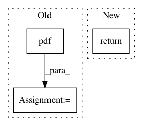

da42c137d164ab56a1f1919c8f0ee21e6172f120,cde/evaluation/GoodnessOfFit.py,GoodnessOfFit,hellinger_distance_monte_carlo,#GoodnessOfFit#Any#Any#,134
Before Change
Q = self.estimator.predict
samples = stats.cauchy.rvs(loc=0, scale=2, size=(n_samples, self.estimator.ndim_x))
f = stats.cauchy.pdf(samples, loc=0, scale=2)
p = np.sqrt(P(samples, y))
q = np.sqrt(Q(samples, y))
After Change
distances[i] = np.sqrt(np.mean(r / f)/2)
assert distances.ndim == 1 and distances.shape[0] == x.shape[0]
return distances
def compute_results(self):
In pattern: SUPERPATTERN
Frequency: 3
Non-data size: 3
Instances
Project Name: freelunchtheorem/Conditional_Density_Estimation
Commit Name: da42c137d164ab56a1f1919c8f0ee21e6172f120
Time: 2018-03-20
Author: jonas.rothfuss@gmx.de
File Name: cde/evaluation/GoodnessOfFit.py
Class Name: GoodnessOfFit
Method Name: hellinger_distance_monte_carlo
Project Name: SPFlow/SPFlow
Commit Name: 6ce049fae6ac83de1c88f2237308f315c84eb7e0
Time: 2020-01-29
Author: molina@cs.tu-darmstadt.de
File Name: src/spn/structure/leaves/parametric/Inference.py
Class Name:
Method Name: continuous_likelihood
Project Name: fgnt/pb_bss
Commit Name: b800ecab894566a04000eaad52f0b9bf6327cdf9
Time: 2018-05-07
Author: cbj@mail.uni-paderborn.de
File Name: dc_integration/distribution/cwmm.py
Class Name: ComplexWatsonMixtureModelParameters
Method Name: predict